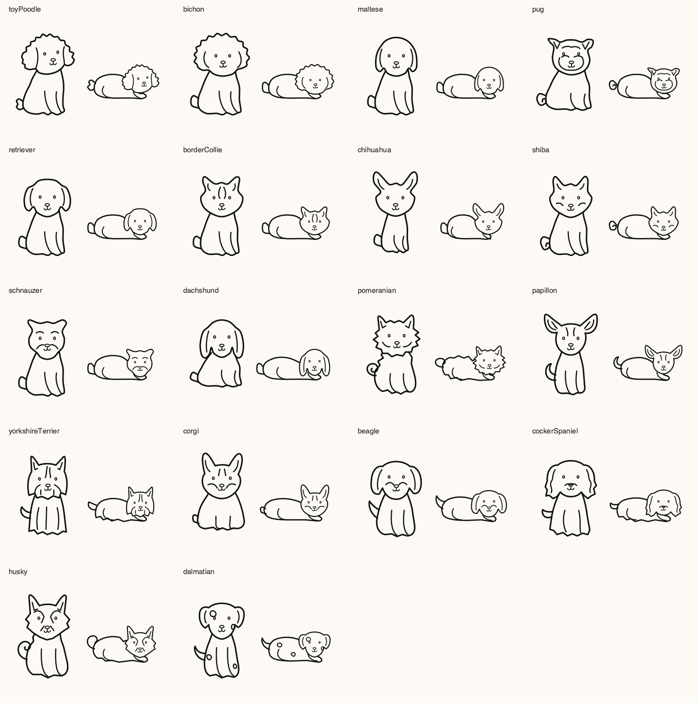

数値の要約
運動量を素早く確認できる一方、場面や出来事の順序は残しにくい。
Personal project · iOS · UX / UI
一緒に散歩できなくても、愛犬の一日を家族と分かち合えるように。あとから散歩をたどれる体験を設計しました。
Personal project · TestFlight

2026.11.05 アプリ・iOSシミュレーター撮影。名前とルートはサンプル、写真は説明用の画像です。最新リリースではなく、撮影時のUIを掲載しています。
企画・情報設計・UIデザインを担当。GPT / Codexの支援で実装を進めながら、家族に何を、どう伝えるかを考えています。
私が愛犬を散歩させる間、家事を担う妻にもそのひとときを届けたいと思いました。離れて暮らすきょうだいや両親も、愛犬の一日を分かち合える体験へと広げています。
近所の夫婦二組が別々に散歩する姿を見かけましたが、理由は聞いていません。自分の経験とこの限られた観察から、散歩や世話を分担する20代後半〜30代前半の夫婦を初期の対象として仮に置きました。
距離と時間だけでは伝わらない場面を、経路・写真・活動の時系列でたどれるようにしました。散歩する人はその場で記録し、家族はあとから見る、二つの流れをつなぐ設計です。


運動量を素早く確認できる一方、場面や出来事の順序は残しにくい。
印象的な場面は伝えやすいが、写真だけでは撮影場所や前後の活動がつながらない。
記録をまとめる手間は増えるが、経路・写真・活動を一つの散歩としてたどれる構成を優先。
終了時の操作も、記録から共有へのつなぎ目として考えています。終了アイコンを押し、確認し、完了のフィードバックを受けて再生へ進む流れです。終了を確定する場面と、そのあと記録を見る場面を分け、次に何をするかを明確にする設計として、今後操作を確かめていきます。
初期ホームの地図・予定・フィラリア予防薬の日付を整理し、愛犬の確認と散歩の開始を優先しました。散歩後は要約から記録へ進む構成に絞っています。
通知・設定の位置を揃え、明暗どちらでも文字と指標が読めることを確認基準にしています。
散歩後のルート表示と犬の切り替え矢印を外し、中央の愛犬と名前、左右スワイプと次の犬の顔のプレビュー、散歩指標から履歴への移動へと整理しています。
犬種や状態で変わるキャラクターを、かわいく親しみやすい存在に。愛犬を中心に置き、名前や散歩情報も読める余白を考えています。

アプリを開かずに時間・距離を確認し、犬の顔でホームとのつながりを持たせる設計です。距離更新や状態切り替えの実機確認は続けています。

正式リリース・外部ユーザーテスト前で、自分での使用と機能確認を進めています。妻の好意的な反応は非公式の感想として捉えています。
公開後は参加者を募り、接続可能な家族の接続完了→別の家族による記録閲覧→タイムラプスの利用・再訪を見ていく予定です。「一緒に過ごした感じ」は行動だけで判断せず、インタビューで聞きます。
一緒に歩けない日も、
愛犬の一日を家族と。